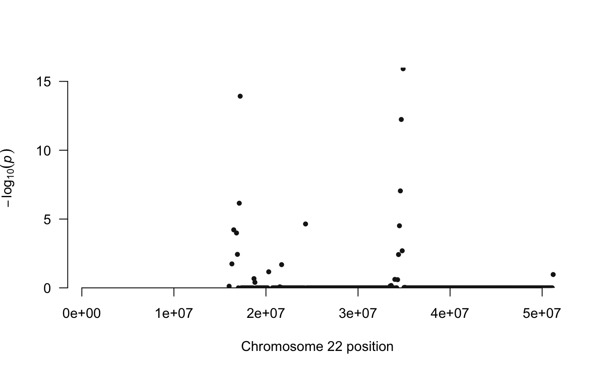

Manhattan plot function for results of multiHiCcompare
manhattan_hicexp( hicexp, pval_aggregate = "standard", return_df = FALSE, p.adj_cutoff = 0.05, plot.chr = NA )
| hicexp | A hicexp object that has had differences detected |
|---|---|
| pval_aggregate | string denoting the p-value method to use for plotting. Options are "standard", "fisher", "lancaster", "sidak", and "count". "standard" plots a manhattan plot using all individual p-values (very slow, use with caution). "fisher", "lancaster", or "sidak" methods use the Fisher's, Lancaster, or the Sidak method, respectively, for combining p-values for each region which are then plotted on the -log10(p-value) Y-axis. "count" summarizes the number of times a region was detected as significant (see "p.adj_cutoff" parameter), plotted on Y-axis. The higher the dots are, the more significant/more frequent a region was detected as significantly differentially interacting. See ?topDirs |
| return_df | Logical, should the data.frame used to generate the plot be returned? |
| p.adj_cutoff | The adjusted p-value cutoff to be used for calling an interaction significant. This is only used if method = 'count'. Defaults to 0.05. |
| plot.chr | A numeric value indicating a specific chromosome number to subset the plot to. Defaults to NA indicating that all chromosomes will be plotted. |
A manhattan plot and optionally the data.frame used to generate the manhattan plot.
This function is used to create a manhattan
plot for the significance of all genomic regions
in the dataset. These correspond to the rows (or columns)
of the upper triangle of the full Hi-C matrix. Each genomic
region of the Hi-C dataset has multiple interactions it
is involved in and the significance of all of these can
be visualized with pval_aggregate = "standard".
Alternatively the p-values for all these interactions
can be combined using either Fisher's, or the Lancaster or the
Sidac method of combining p-values. Additionally
the "count" option will plot based on the number of times
each region was found to be involved in a signficantly
different interaction. The
manhattan plot can be used to identify "hotspot"
regions of the genome where major differences
seem to be located based on the results of a multiHiCcompare
analysis.
